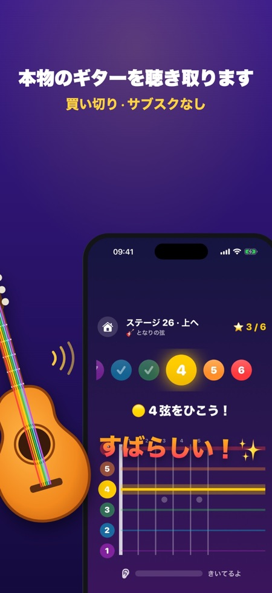
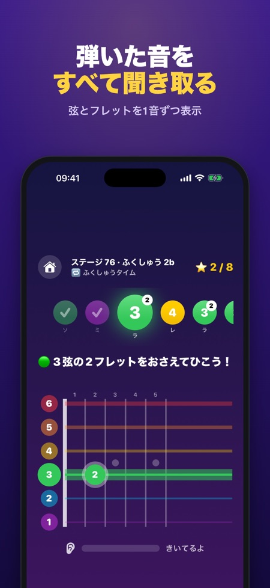
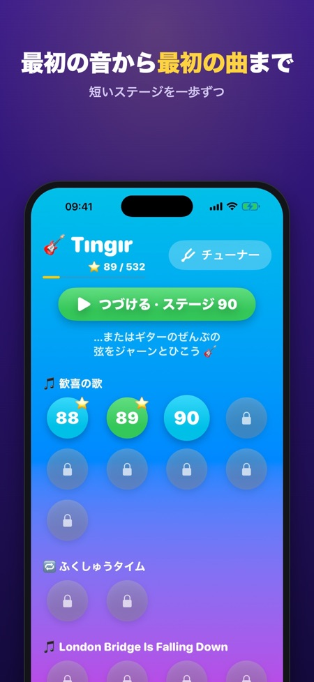

レッスン・曲・チューナー. 本物のギターを持てば、Tıngırがきいてくれる！ 正しい音には拍手、ステージクリアで紙ふぶき。 最初の音から最初の曲まで500以上のステージ。 広告なし・サブスクなし・データ収集なし。 .



Tıngırは、本物のギターをひきながら子どもがギターを学べるゲームです。 画面をタップする必要はありません。 ギターがコントローラーです。 iPadかiPhoneを前に置いて弦をはじくと、Tıngırがマイクできいて、どの弦・どの音をひいたかを聞き分けます。
とてもかんたんにスタート
• まずは開放弦：1本ずつ、2回、となりの弦
• つぎにフレットをおさえる音をひとつずつ
• それから曲：パートごと、曲をぜんぶ、さいごはおぼえてひく
532ステージ・34曲
ハッピーバースデー、歓喜の歌、ジングルベル、コロブチカ、エリーゼのためになど。 太い弦やほかの調でもひけます。
ひとつひとつに拍手
正しい音には「すごい！ 」、ステージの終わりには星と紙ふぶきとファンファーレ。 まちがえても大丈夫、「もう一回やってみよう！ 」だけ。
画面にさわらずにあそべる
ステージが終わったら、ぜんぶの弦をジャーンとひいてつぎへ。
チューナー内蔵・40言語
プライバシー
アカウントなし、広告なし、データ収集なし。 マイクは音を聞き分けるために端末の中だけで使われ、録音や送信はしません。
アコースティック、エレキ、クラシックギターに対応。
1ステージの流れ
1. Tıngırが、ひく弦とおさえるフレットを色つきの弦と大きな数字で見せます。
2. 子どもが本物のギターでその音をひきます。
3. Tıngırが音を聞き取って拍手し、つぎの音へ進みます。 楽譜が読めなくても大丈夫です。
保護者の方へ
• 1ステージは短いので、毎日の練習に取り入れやすい
• 進み具合はこの端末に保存。 アカウント登録は不要
• オフラインで動作。 あそぶときにインターネットは不要
• ギター教室に通う前の第一歩にも、教室と並行した自宅練習にも
• 色と数字が道しるべになるので、楽譜や音楽の知識がなくてもはじめられます
• 間違えても減点なし。 ほめられながら少しずつ上達します
よくある質問
どんなギターが使えますか？
アコースティック、クラシック、エレキギターが使えます。 子ども用の小さなギターでも大丈夫です。
うるさい部屋でも使えますか？
静かな部屋で、端末をギターの近くに置くといちばんよく聞き取れます。
ギターの音がずれていたら？
まず内蔵のチューナーでチューニングしてください。 すべての音が正しく聞き取られます。
何歳から使えますか？
弦をはじけるようになったら、何歳からでもはじめられます。 小さな子は保護者と一緒に開放弦のステージから始めるのがおすすめです。
録音されますか？
いいえ。 マイクは端末の中で音を聞き分けるためだけに使われ、録音も送信もしません。
1回の買い切り購入で532レベル・34曲すべてが解放されます。 サブスクはありません。 購入画面は保護者ゲートの先にあります。